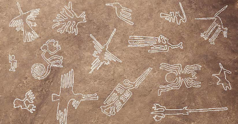

Artigo
As Linhas de Nazca
Postado em 11/06/2020
A civilização que viveu no deserto de Nazca, no Peru, cessou de existir no século VIII D.C, aproximadamente. Ela não havia despertado interesse algum, até que, em 1927, um aviador percebeu formas animais, vegetais e geométricas marcadas no deserto, perceptíveis apenas do céu. Pesquisas inicais demonstraram que as linhas foram feitas removendo a camada superficial do deserto, formada por rocha vulcânica com óxido de ferro marrom-avermelhado, deixando exposto o solo mais claro abaixo. Naturalmente, surgiram várias teorias da conspiração para explicar sua formação. Vamos analisar as principais a seguir.
O Maior Livro Astronômico do Mundo
A pesquisadora alemã Maria Reiche dedicou sua vida a pesquisar e proteger as linhas e os achados arqueológicos da região. Acabou ficando muito célebre, e popularizou a teoria de que as linhas seriam um enorme mapa astral, que refletiria a posição dos astros naquele período. Ela foi realmente a fundo em sua teoria, relacionando a figura do macaco com a Ursa Maior, e o golfinho e aranha com Orion.
Segundo ela, algumas linhas seriam alinhadas com o solstício de verão, e sua finalidade seria a de calendários e observatórios astronômicos. O problema com essa teoria é que existem centenas de figuras no imenso deserto, e astrônomos já fizeram exaustivas comparações com as constelações, com sucesso mínimo.
Influência Extraterrestre
Logicamente, figuras que só podem ser observadas do céu inspiraram teorias de influência alienígena. Segundo essas ideias, seres de outro planeta teriam proporcionado aos nativos o conhecimento para a construção das linhas, e ajudado eles a aplainar o topo das montanhas, para que fizessem campos de pouso para suas espaçonaves. Além disso, serviriam como guias para orientar a chegada dos nossos visitantes.
Não me entenda mal leitor. Não sou cético a respeito de OVNIs, como você pode conferir em outros artigos do site, mas de todas as teorias da conspiração sobre alienígenas, essa parece a mais fraca. Primeiramente, há de se questionar por que um aparelho capaz de viajar entre planetas precisaria que nativos construíssem uma pista de pouso, Além disso, por que uma civilização evoluída o suficiente para cruzar mundos precisaria de desenhos no solo para orientação? Vou evitar comentar a ideia de que ocorreu uma terraplanagem para o pouso de discos voadores para não ofender o leitor, afinal a existência de planaltos é um fenômeno geológico amplamente conhecido.
Além de tudo isso, a ideia de que era necessário uma civilização mais avançada foi derrubada pela arqueologia.Foram encontradas estacas, datadas daquela época, nas bordas de algumas linhas. Dessa forma, as figuras eram projetadas em uma dimensão pequena, e depois reproduzidas em tamanho maior com linhas presas ao chão por estacas, coisa que um pedreiro faria com tranquilidade hoje em dia, pelo simples conhecimento do seu ofício.
Mapas para Localizar Água
Outra teoria é a de que as linhas seriam mapas para localizar as raras fontes de água no deserto. Essa teoria parece ter fundamento, porém também esbarrou em sua comprovação. Existiam dois tipos de desenhos: os grandes e lineares, com mais de 50 m de comprimento, criados entre 100 e 300 D.C.; e os pequenos e mais complexos, feitos aproximadamente 100 A.C; No total, são 800 linhas retas, 300 figuras geométricas, e 70 desenhos de plantas ou animais, e menos de uma dezena realmente conduz até um curso d'água.
Local de Procissão
As melhores pistas para o mistério foram encontradas, como esperado, na arte. Os vazos encontrados indicam uma civilização muito ligada na agricultura. Há 30 km das linhas, temos a cidade de Cahuachi, a qual os arqueólogos descobriram não abrigar nenhuma população permanente, tendo sido um local de rituais e peregrinação. Os nativos realizavam imensos rituais de fertilidade, com o auxílio de São Pedro, alucinógeno feito do catus "Trichocereus pachanoi". Sendo assim, as linhas teriam sido, ao longo do tempo, criadas como parte da ritualística do povo local, como forma de adorar as entidades naturais através de procissões com grande número de pessoas (e sem dúvida muitos sacrífios, a considerar o número de esqueletos decapitados encontrados na região).
Um comprovação interessante para essa teoria foi a tese de doutorado de Karsten Lambers, em 2006, que indicou que os geoglifos foram o resultado de aproximadamente mil anos de evolução social. As primeiras manifestações teria sido petroglifos (gravuras feitas na rocha), que depois teriam passado a ser desenhadas no solo, em maior escala. O povo de Nazca seria extremamente iconográfico e, ao longo dos séculos, foi refinando sua expressão religiosa e social nos geoglifos. A ideia de que eram feitas procissões no local foi reforçada pela tese de Karsten, que identificou que o solo dos geoglifos era realmente mais compactado que suas adjacências, decorrente de intenso trânsito de pessoas. Segundo ele, toda a simbologia encontrada pelos arqueólogos indica que os rituais tinham como objetivo principal a obtenção de água e fertilidade.
Conclusão
Apesar de todas as teorias conspiracionistas, temos um bom volume de estudos sobre as Linhas de Nazca, essa preciosidade da história mundial. Nesse artigo, reuni as princiais teorias das fontes científicas e conspiracionistas, e espero que você, leitor, possa tirar suas próprias conclusões conclusões sobre o singificado das linhas.
Particularmente, acredito na teoria mais pragmática, de que realmente as linhas tinham função religiosa e social, fincionando como caminhos de peregrinação. Além disso, após ler muito sobre os geoglifos e a cultura Nazca (duvido que eles se tratassem por esse nome), tenho a impressão de que os desenhos podem ter relação com os reis da época. Não é segredo que muitas civilizações deificavam reis.
Considerando toda a evolução e variedade dos desenhos, e a adoração a figuras humanas repsentando animais, acredito ser possível que cada rei se identificava com uma animal ou planta (como os totens ou animais de poder do xamanismo), e exigiam um culto a esse animal por parte dos seus súditos. A cerimônia poderia ser uma forma de imortalizar a alma do rei, daí a explicação de poder ser percebida apenas dos céus, onde arquetipicamente fica a morada dos deuses. O enorme número de crânios decapitados mostra realmente a força desses cultos, que certamente tinham líderes com imenso poder espiritual sobre a sociedade. Mas essa minha interpretação é puramente especulativa, pois essa é a parte legal de estudarmos Segredos da Antiguidade = )
©2020 Copyright: Segredos da Antiguidade.